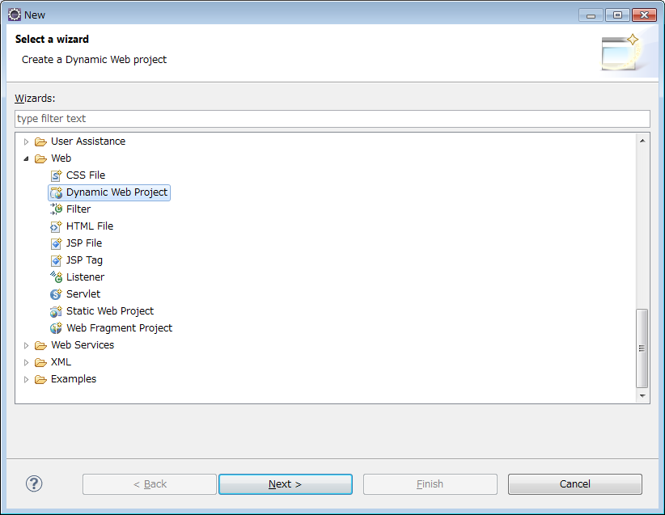
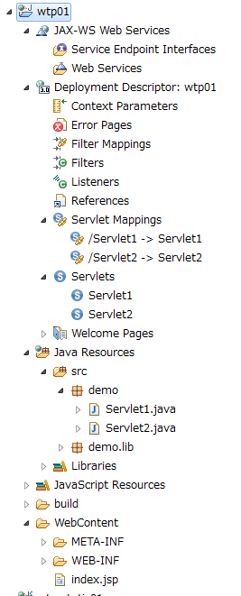
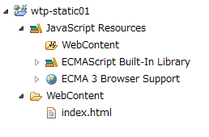
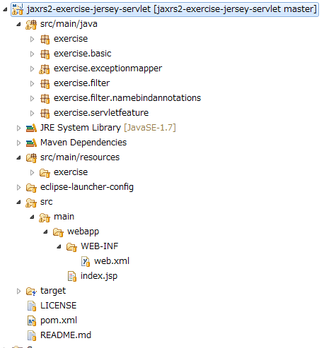
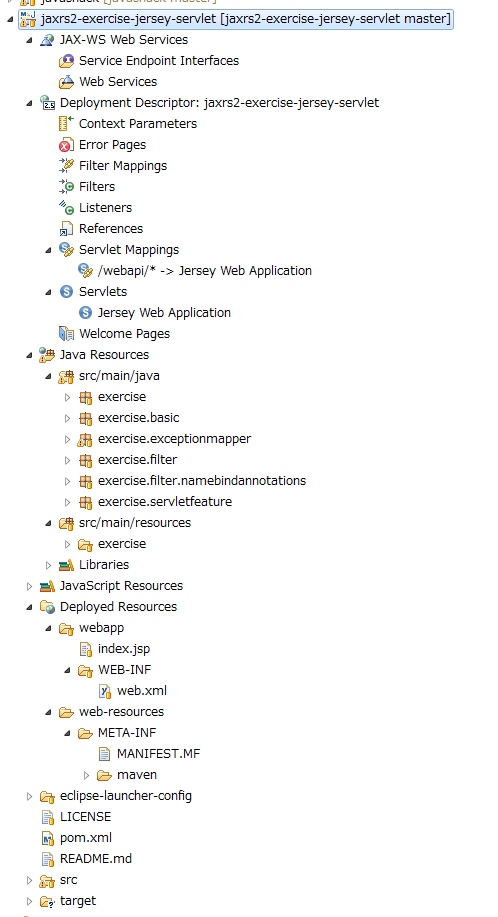
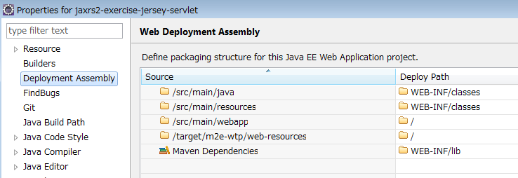
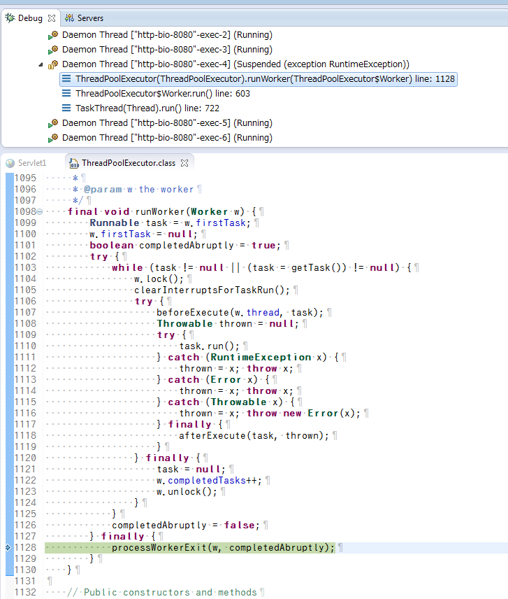
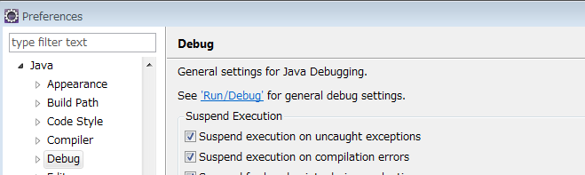
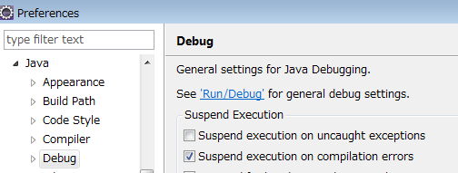

EclipseでWTPツールやm2e-wtpを試したメモです。
- Web Tools Platform (WTP) Project
ちょっと古いけど、Server登録後に新規プロジェクトで"Web" -> "Dynamic Web Project" or "Static Web Project" 作る流れは変わってない。
- Eclipse 3.1を使おう（3）：Webアプリのための標準プラグイン「WTP」 (1/2) - ＠IT
- Eclipse 3.1を使おう（4）：Eclipse WTPを使った始めてのWebアプリ (1/2) - ＠IT
- [ThinkIT] 第1回：Eclipse WTPの概要とインストール (1/3)
- 18. 統合開発環境に関する知識 II | 日本OSS推進フォーラム
- http://ossforum.jp/node/984
- II-18-3 から II-18-5 までが、Eclipse 3.3以降でのWTPを使った開発方法の解説になっている。
- http://ossforum.jp/node/984
プロジェクト作成の基本
"Web"カテゴリから"Dynamic Web Project"を選択すればJavaEEのServletアプリを、"Static Web Project"を選択すれば静的なWebページプロジェクトを作れます。

多分、他にもWTPで作れるようになるプロジェクトあると思うんですが、代表例は上記2つかと。
"Dynamic Web Project"だと、"Java EE"パースペクティブでこんな感じになり、web.xmlの構成要素を視認しやすくなります。右クリックでServletを追加したりすることもできます。

"Static Web Project"はシンプルにこんな感じになります。JavaScript開発用のライブラリが追加されてます。

Debug or Run時のHot Deployについて
環境：
Win7Pro 64bit 日本語版 Eclipse 4.2 Juno SR2 Eclipse Java Web Developer Tools 3.4.2.v201209272000-7F7DFSpC26SrlX9qoilV1RGQC9ivZy86-bz-IBHe ServerとしてTomcat 7.0.x系
WTPを使ってDebug or Runを実行し、その最中にJavaのソースコードを修正すると、コンテキストの再ロードが発生するようです。
Tomcat 7.0.x系を使って起動している最中にJavaのソースを修正して保存したら、数秒後、以下のようなログがコンソールに出力されました。
8 03, 2014 6:43:11 午後 org.apache.catalina.core.StandardContext reload 情報: このコンテキストの再ロードを開始しました 8 03, 2014 6:43:13 午後 org.apache.catalina.core.StandardContext reload 情報: このコンテキストの再ロードが完了しました
コンテキストの再ロードになるので、ごっそり入れ替わるイメージになります。Servletアプリのshutdownとstartが発生するので、ContextListenerやstartup=1のServletのinit()などで複雑なクリーナップや準備処理をしていると、時間がかかるかもしれません。
m2e-wtp
Mavenプロジェクトの場合、Maven用のディレクトリ構成とEclipseのデフォルトのディレクトリ構成が大きく異なるため、そのままではWTPで処理できません。このギャップを埋めてくれるのがm2e-wtpプラグインになります。
本家：
- m2e-wtp
参考：
- [ 2809 ] [maven]Eclipse m2eとWTPプラグインを使う時のTips ::: Serendipity 2 future lies'n sundome. (´・ω・)
- JavaEE7(GlassFish4.0)のEclipse4.3(Kepler)におけるMaven(M2E)連携 | あらぶるトラブル
- Hello world with Jetty + Maven + Eclipse WTP tutorial — Virtage Devblog
試しに、自分で作った練習用のJersey + Servletソースを読み込ませてみました。
https://github.com/msakamoto-sf/jaxrs2-exercise-jersey-servlet
SourceTreeでcloneしたあと、EclipseのProjectのImportで、既存のMavenプロジェクトをインポートします。
→ Java パースペクティブですと、普通のMavenプロジェクトとして表示されます。

→ "Java EE" パースペクティブに切り替えると、m2e-wtpをインストールした状態ですと、自動的に認識して、WTPにあわせた見え方になりました。

Debug, Run も他のwtpプロジェクトと変わらずに操作できます。
MavenのServletアプリを通常のJavaプロジェクトで扱うと、"src/main/webapp" まで辿らないとHTMLやWEB-INFが開けないのですが、m2e-wtpであれば、"Deployed Resources" -> "webapp" から簡単にアクセスできる点も魅力的です。
WTPのプロジェクトでは、"Deployment Assembly" の設定がキモになるようですが、m2e-wtpがインストールされていると、以下の様な設定に調整してくれました。

今回試したケースでは、Mavenプロジェクトとしてインポートした後、Java EEパースペクティブに切り替えたら自動的に認識されました。そのため、明示的に"Dynamic Web Project"としてインポートする方法は未調査となります。
2014-08-02時点の環境：
Win7Pro 64bit 日本語版 Eclipse 4.2 Juno SR2 Eclipse Java Web Developer Tools 3.4.2.v201209272000-7F7DFSpC26SrlX9qoilV1RGQC9ivZy86-bz-IBHe m2e-wtp - Maven Integration for WTP 1.0.1.20130911-1545 ServerとしてTomcat 7.0.x系
※自動的に ".project" ファイルに以下のエントリーが追加される・・・。これ、m2e-wtpが入ってないEclipse環境で開いてもエラーにならないかな？
<buildSpec>
<buildCommand>
<name>org.eclipse.wst.common.project.facet.core.builder</name>
<arguments>
</arguments>
</buildCommand>
....
<buildSpec>
<natures>
...
<nature>org.eclipse.wst.common.project.facet.core.nature</nature>
</natures>
トラブル
WTPは単一のPlugin, Featureではなく、複数の要素から成り立っているため、細かいトラブルがぼちぼちありそうです。
以下、実際に遭遇したのを紹介します。
Tomcatを使ってDynamic Web ProjectをDebugすると、時々勝手にTomcatのスレッドの「processWorkerExit()」でbreakする。
環境：
Win7Pro 64bit 日本語版 Eclipse 4.2 Juno SR2 Eclipse Java Web Developer Tools 3.4.2.v201209272000-7F7DFSpC26SrlX9qoilV1RGQC9ivZy86-bz-IBHe
こんな感じで、放置しとくと、どっかのタイミングで繰り返し、勝手にbreakします。

同様の症状：
- java - Eclipse breaks on processWorkerExit - Stack Overflow
- java - OpenJDK breaks on processWorkerExit with no breakpoint - Stack Overflow
どうも、Window -> Preference -> Java -> Debug で、"Suspend execution on uncaught exceptions"にチェックが入ってると、Tomcat内の部分についてもチェックするようになり、breakしてしまうようです。

→こんな感じで、チェックを外してあげれば、Debug実行で勝手にbreakすることは無くなりました。

とはいえ、本来はアプリのコードでbreakしてくれた方がうれしいので、チェックはONにしておきたいところではあります・・・。
Static Web ProjectでRun or Debugすると "java.lang.NoClassDefFoundError: org/eclipse/jetty/webapp/WebAppContext" 発生
環境：
Win7Pro 64bit 日本語版 Eclipse 4.2 Juno SR2 Eclipse Java Web Developer Tools 3.4.2.v201209272000-7F7DFSpC26SrlX9qoilV1RGQC9ivZy86-bz-IBHe
"Console"を開くとこんな例外が出てた：
Exception in thread "main" java.lang.NoClassDefFoundError: org/eclipse/jetty/webapp/WebAppContext at java.lang.Class.getDeclaredMethods0(Native Method) at java.lang.Class.privateGetDeclaredMethods(Class.java:2442) at java.lang.Class.getMethod0(Class.java:2685) at java.lang.Class.getMethod(Class.java:1620) at sun.launcher.LauncherHelper.getMainMethod(LauncherHelper.java:492) at sun.launcher.LauncherHelper.checkAndLoadMain(LauncherHelper.java:484) Caused by: java.lang.ClassNotFoundException: org.eclipse.jetty.webapp.WebAppContext at java.net.URLClassLoader$1.run(URLClassLoader.java:366) at java.net.URLClassLoader$1.run(URLClassLoader.java:355) at java.security.AccessController.doPrivileged(Native Method) at java.net.URLClassLoader.findClass(URLClassLoader.java:354) at java.lang.ClassLoader.loadClass(ClassLoader.java:423) at sun.misc.Launcher$AppClassLoader.loadClass(Launcher.java:308) at java.lang.ClassLoader.loadClass(ClassLoader.java:356) ... 6 more
検索するといくつか同様の症状が見つかったが、どれもJuno SR2で、自分も同じ。
- jetty - Eclipse Juno with Web Tools Platform - HTTP Preview at localhost throws NoClassDefFoundError - Stack Overflow
- Bug 402848 – Eclipse Juno SR2 HTTP Preview server does not start
- Eclipse Community Forums: Web Tools Project (WTP) » Starting HTTP Preview Java exception
一応対処法が載っているが、どうもかなり面倒くさい手順になりそう。
"Dynamic Web Project" + Tomcat ではこんなエラーは起きない。
"HTTP Preview Server"を使う時だけか？
結論としては、他のEclipseのバージョンで試してみるか、"Dynamic Web Project"化して試すか、別のIDEや環境にするか。
静的Webページを開発するのであれば、Eclipseに拘る必要も無いと思います。